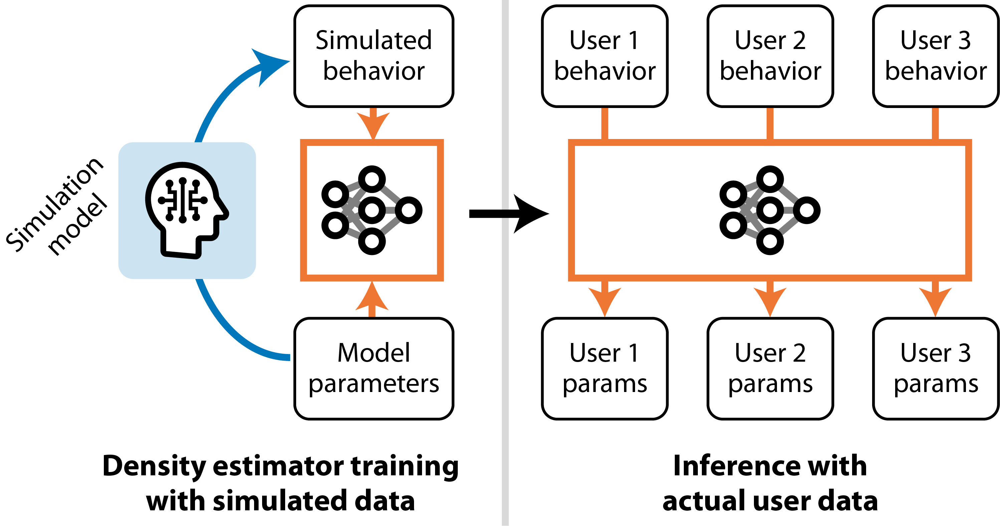

Amortized Inference with User Simulations
|
1
|
2

|
Proceedings of the 2023 CHI Conference on Human Factors in Computing Systems (CHI 2023)
Making deep inferences about users quicker
|
•
HCI models can explain user behavior by parameter fitting.
• HCI models contain theoretically interesting parameters describing cognitive and physiological characteristics of users. • Traditional methods face challenges due to computational costs, taking hours or even days per user. • In amortization, we pretrain a neural proxy model for probabilistic inference. It increases speed of inference and achieves robustness by estimating parameter distribution. • We study the efficiency and accuracy of amorization in three HCI cases: typing, menu selection, and pointing. |
 |
Abstract
There have been significant advances in simulation models predicting human behavior across various interactive tasks. One issue remains, however: identifying the parameter values that best describe an individual user. These parameters often express personal cognitive and physiological characteristics, and inferring their exact values has significant effects on individual-level predictions. Still, the high complexity of simulation models usually causes parameter inference to consume prohibitively large amounts of time, as much as days per user. We investigated amortized inference for its potential to reduce inference time dramatically, to mere tens of milliseconds. Its principle is to pre-train a neural proxy model for probabilistic inference, using synthetic data simulated from a range of parameter combinations. From examining the efficiency and prediction performance of amortized inference in three challenging cases that involve real-world data (menu search, point-and-click, and touchscreen typing), the paper demonstrates that an amortized inference approach permits analyzing large-scale datasets by means of simulation models. It also addresses emerging opportunities and challenges in applying amortized inference in HCI.Citation
@inproceedings{moon2023amortized,
title={Amortized Inference with User Simulations},
author={Moon, Hee-Seung and Oulasvirta, Antti and Lee, Byungjoo},
booktitle={Proceedings of the 2023 CHI Conference on Human Factors in Computing Systems},
year={2023},
publisher = {Association for Computing Machinery},
url = {https://hsmoon121.github.io/projects/chi23-amortized-inference},
doi = {10.1145/3544548.3581439},
location = {Hamburg, Germany},
series = {CHI '23}
}